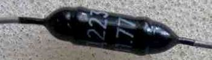
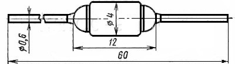

Диоды Д223
Диоды Д223, Д223А, Д223Б - сплавные (кремниевые). Имеют металлостеклянный корпус и гибкие выводы. Название диода и его цоколёвка нанесены на его корпусе. Весит такой диод около 0,5 г.


Рис. 1 - Внешний вид и размеры диода Д223
Таблица 1
| Постоянное (среднее) прямое напряжение | 1 В |
| Обратный ток (постоянный) | 1 мкА |
| Максимально допустимое постоянное обратное напряжение (Uобр max) | |
| Д223 | 50 В |
| Д223А | 100 В |
| Д223Б | 150 В |
| Выпрямленный ток (средний) | 50 мкА |
| Прямой ток (импульсный) | 500 мА |
| Максимальная рабочая частота (f max) | 20 МГц |
| Рабочая температура | -60...+125°C. |